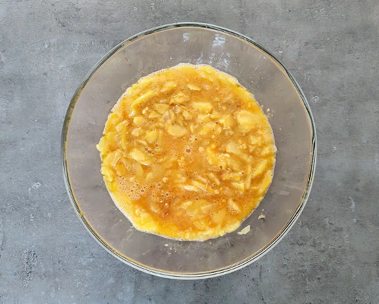
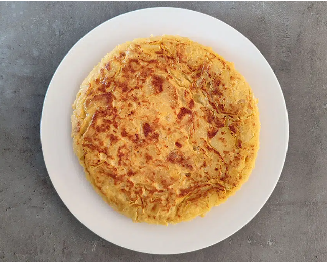

5 huevos
500 g de patatas
1 cebolla
Sal
Aceite de Oliva
Pelamos y lavamos las patatas, las cortamos en rodajas finas al igual que la cebolla.
Ponemos ambas cosas en una sartén y cubrimos de aceite de oliva virgen extra
Dejamos que se hagan a fuego medio-suave hasta que comiencen a dorarse. Sabréis que las patatas están hechas cuando comiencen a romperse,con la paleta.
Para que la tortilla esté jugosa es importante que las patatas se hagan bien y se confiten,
porque no hay nada peor que una tortilla con las patatas medio crudas. Por lo tanto, paciencia con este paso.
Las sacamos de la sartén y escurrimos bien. Ponemos en un cuenco grande
Aparte batimos los huevos y los añadimos a las patatas y a la cebolla, añadimos un poco de sal y mezclamos.
Dejamos un par de minutos que se mezclen bien.
Aquí hay quien prefiere dejar las patatas enteras y quien prefiere machacarlas un poco con la paleta para que se mezclen bien con el huevo.
